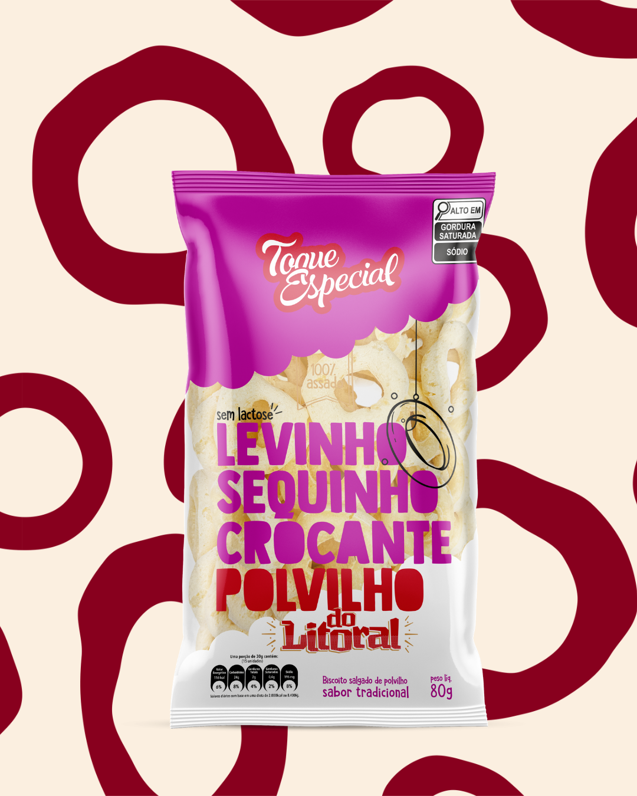
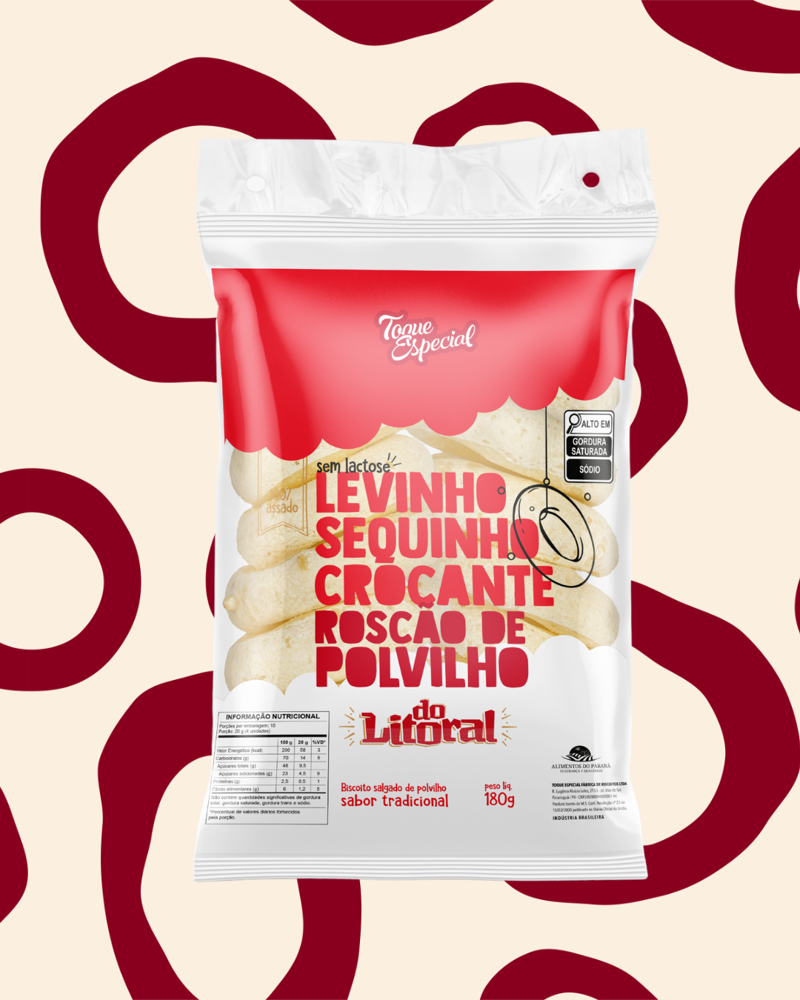
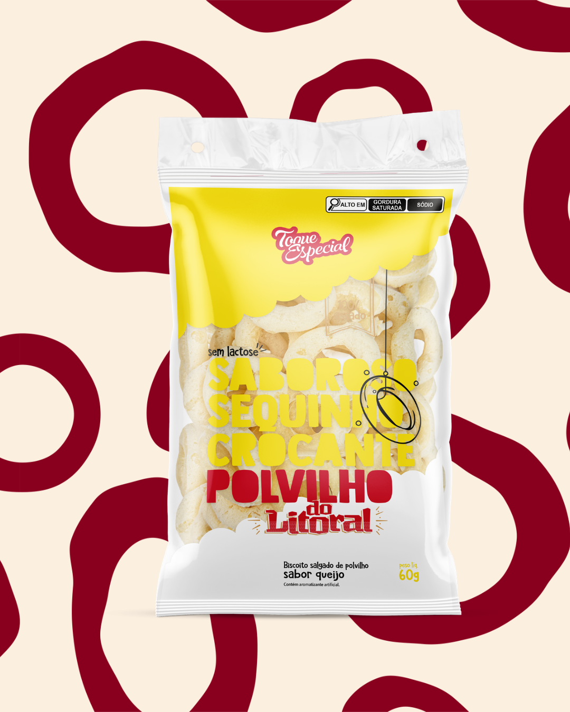
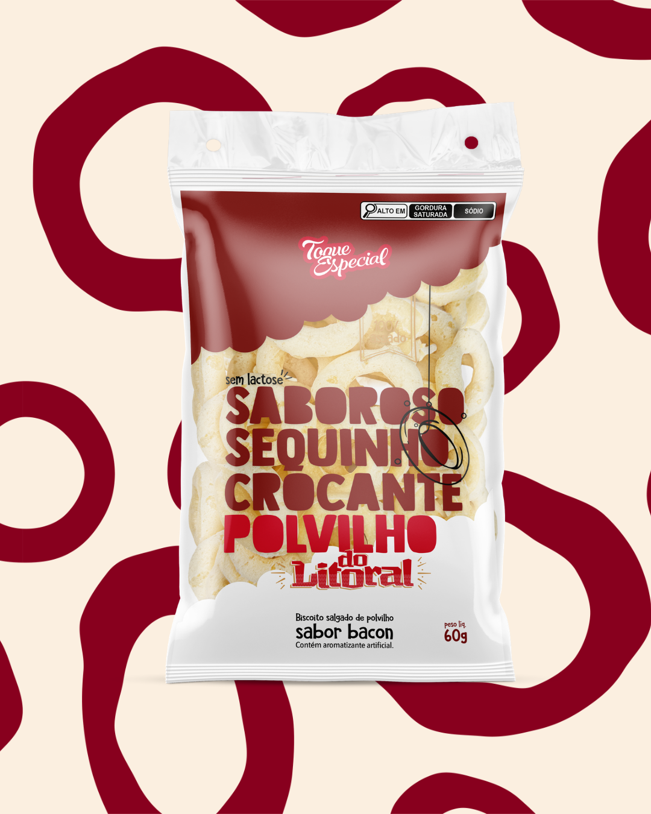
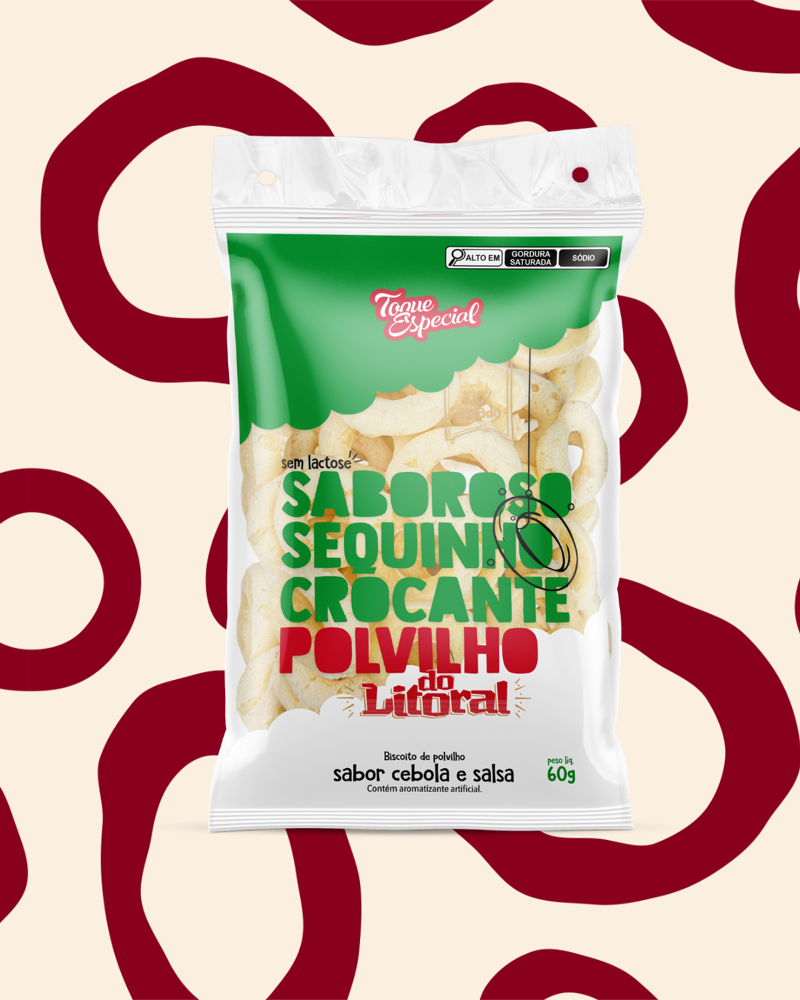
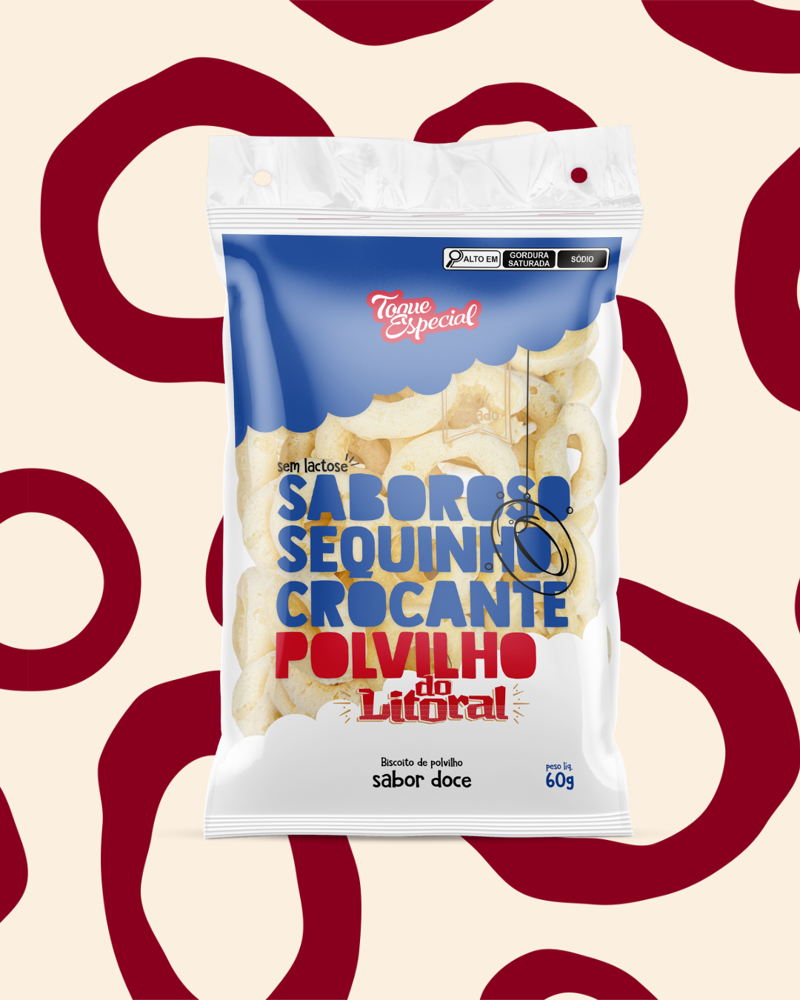
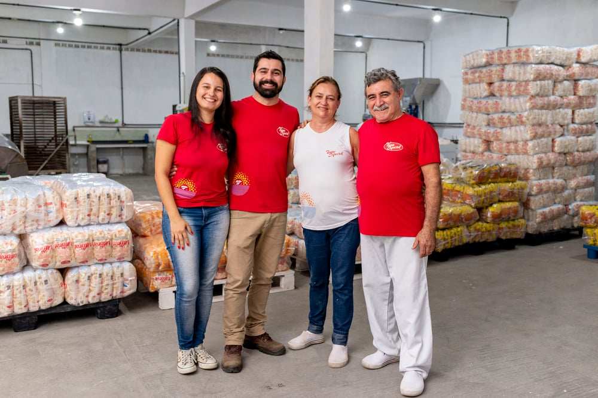
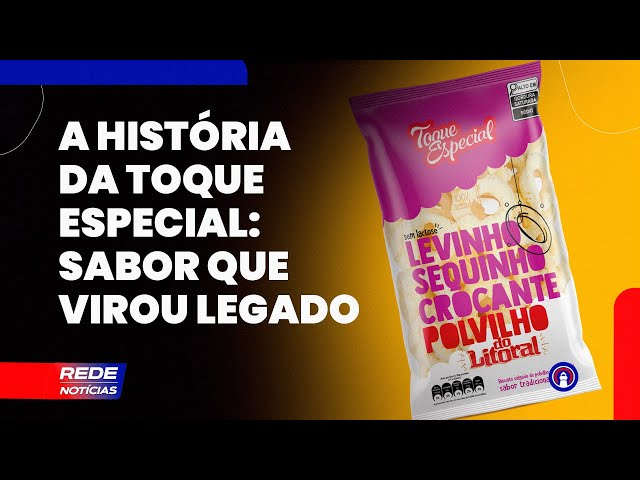

conheça nossos produtos

biscoito tradicional 80g e 40g

roscão 180g

biscoito sabor queijo 60g

biscoito sabor bacon 60g

biscoito sabor cebola e salsa 60g

biscoito doce 60g
Quem Somos

Nascida do sonho dos fundadores Seu Sérgio e Dona Cida, a Toque Especial é uma tradicional fábrica familiar de biscoitos de polvilho artesanais. Hoje, sob o comando dos atuais líderes Deivid e Areta, a empresa une tradição e modernidade no Jardim Vale do Sol. Com receitas exclusivas e uma linha sem lactose, a marca é referência na região e abastece comércios em todo o Paraná e Santa Catarina.
Conheça Nossa História

Fundada em fevereiro de 2008, a Toque Especial nasceu da paixão por empreender de Seu Sérgio, que enxergou em Paranaguá o lugar ideal para construir o seu legado. Ao lado de sua esposa, Dona Cida — responsável por batizar a marca —, ele transformou o sonho de fabricar biscoitos de polvilho artesanais em realidade. A partir de 2010, a história ganhou um novo capítulo com a chegada de Deivid e Areta na gestão. Eles assumiram a administração da empresa e iniciaram uma forte fase de investimentos estruturais e expansão de mercado. Após passarem por diferentes sedes nos bairros Roque Vernalha e Ouro Fino, a fábrica consolidou sua expansão em 2019, ao se instalar definitivamente em sua moderna sede no Jardim Vale do Sol.Hoje, o pequeno negócio familiar transformou-se em uma indústria que mantém sua receita tradicional viva, distribuindo sabor para todo o Paraná